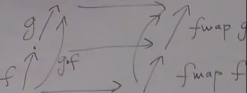
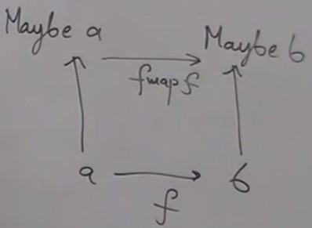

The Maybe functor, continued
We have defined the mappings of the Maybe functor (see previous video) but we still need to see if it respects the additional conditions, sometmes calles functor laws : it must preserves identity and composition.
In Haskell, the compiler cannot check, the type system cannot encode these conditions. However, unlike in other languages, there is a way of using Haskell on a black or white board to formally prove things about the language.
In Haskell, every definition af a function is an equality : "this function acting on this argument equals this expression". It's an equation that permits to replace the left side by the right side whenever we find it in a program, which is called inilining. Inlining is not always correct if it has side effects, like in C or C++ macros. But in Haskell, functions are pure and inlining can be done safely. And we can do the opposite of inilining : refactoring, replacing an expression by a function call. In Haskell, this is guaranteed to work.
This can be used to do equational reasoning. If we can show, using inlining and refactoring, that we can go from a result to an other, then these two things are equivalent.
Identity
We need to prove thatfmap ida = idMaybe a
But it's a polymorphic id, it's defined for every type by the same formula (parametric polymorphism), so we can write :
fmap id = id
fmap and id are already defined, so we just say "these two functions are equal", which means that they have equal values on equal arguments.
Equational reasoning : when
fmap acts on id, it produces a function from Maybe a to Maybe a. So two cases to check : this maybe could be a Nothing or a Just.
-
fmap idacting onNothing. By definition offmap,fmap Nothing = Nothing.
And the definition ifidis :id x = x.
SoNothing = id Nothing(this is refactoring).
Sofmap id Nothing = Id Nothing -
fmap idacting onJust x. By definition offmap,fmap id(Just x) = Just (f x)
Sofmap id(Just x) = Just(Id x) = Just x
And by definition ofid,id(Just x) = Just x
Sofmap id(Just x) = Just x
Composition
We need to prove thatfmap(g . f) = fmap g . fmap fCorresponds to this diagram :

(TODO : add
This can be showed by equational reasoning using the same method as we did for identity (It's done on the blog page about functors).
(TODO : add
fmap g . fmap f)Strictly speaking there is no need to prove it because as we use parametric polymorphism, this is a theorem for free. Once the id property is proven, this follows.
Functors in Haskell
Let's see how to define a functor in general in Haskell. It's called lifting (the functions obtained by a functor are "above" the original ones in the figure. fmap is a higer-order polymorphic function ; higer-order because it takes a function and produces a function ; polymorphic because a and b are arbitrary types. A different fmap is defined for every functor, with different implementations. We have an example of ad'hoc polymorphism ; depending on the parameter (the functor in this case), the implementation of the function (fmap in this case).
We use type class : a family (class) of types that share a common interface. In Haskell, for example a class that supports equality :
class Eq a where
(==) :: a → a → a Bool;
Some type a is a member of Eq class. operator == takes two a and produces a Bool, meaning : "is the first a equal to the second one ?" (yes or no). One name for the function (==) will serve for many different types. The implementation will be different for every type.
But functors are not parametrized by type, functors are type constructors. In Haskell, the class mechanism works equally well for type, type constructors and more exotic things.
The to define a fnuctor in Haskell, we write
class Functor f where
fmap :: (a, b) → (f a → f b)
The compiler knows it's a type constructor because f acts on a type to produce an other type, so f is a type constructor.
Because of currying (we'll see later), parentheses can be skipped and write
class Functor f where
fmap :: (a, b) → f a → f b
The List functor
data List a = Nil | Cons a List(a)A list of
a is either empty or consists of a head of type a and a tail.
List is a type constructor ; it takes an arbitrary type and creates a list of this type.
Is is a functor ? Obviously yes because it's built algebraic data types. But we don't know that yet, so let's define its function
fmap.
instance List Functor where
fmap _ Nil = Nil
fmap f(Cons h t) = Cons((f h) (fmap f t))
List is an instance of class Functor ; providing the implementation of fmap proves that it's a functor.
fmap takes a function from a to b and produces a function from List a to List b.
fmap _ Nil = Nil : an empty list produces an empty list (the underscore replaces f when f is not used in the right part of the equality).
fmap f(Cons h t) : h (head) is of type a ; t (tail) is of type List a. The recursive call to fmap will act on the tail.
The Reader functor
type Reader ra = r → aThe type constructs the arrow itself.
It could be expressed as
type Reader ra = (→) r a
It is like a type constructor but it takes two types as arguments,
r and a and produces a type of function from r to a.
So far we've seen constructors that take one type as argument, but here it takes two types. But we can always fix one type and only care about the second one.
So we fix
r, fix the arrow and vary only a.
The
Reader r functor a mapping between type a and a function from r to a.
This is called currying or partial application : you have a function of two arguments, you fix one argument and it becomes a function of one argument.
The fmap function of
Reader :
fmap :: (a → b) → (r → a) → (r → b )
fmap f g = f o g = (.) f gor
fmap = (.)
Intuition behind functors
(For endofunctors)There are also the
Const, or Identity functors. They all seem totally different.
The intuition is that when a functor is acting on some type, it encapsulates the values of this type, somehow hides them.
An element of the type "functor of
a sort of has elements of type a in it.
So we can think of a functor as a container.
This is obvious for some functors, like
List, Tree, Vector.
Some functors seem more problematic, like
Maybe, which contains either nothing (empty container) or an a.
Applying a function to a container means opening it and applying the function to the contents.
Can we see
Reader as a container ? For example if a is a boolean, a function taking a bool as argument can return two values ; in this sense it "contains" a boolean, this is even more understandable if we memoize the function
The distinction of a data type and a function is weak.
For axample in Haskell, a list from 1 to infinity
[1 ..] ; this is data but this can't be stored into memory an internally it is implemented as a function which produces the elements on demand.
A function is a data, a data is a function. We'll see that a function type is in category theory is actually an exponential, which is a data type.
In C++ there is something called
future which contains a value to be evaluated by an other thread ; it may contain or not a value, depending if it's already evaluated. And you can apply a function to this value wether it is evaluated yet or not.
The only important thing about a functor is that you can apply a function to what it contains. A functor doesn't give you a way of retrieving this value, it is not part of its definition.